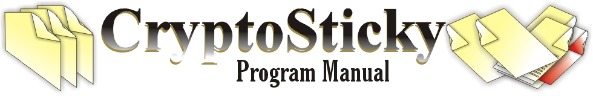
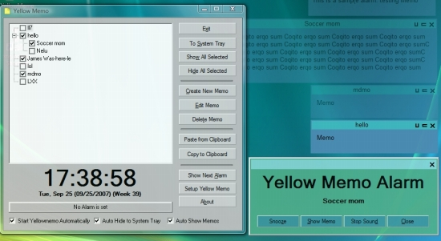
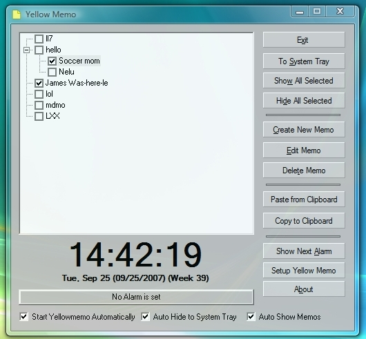
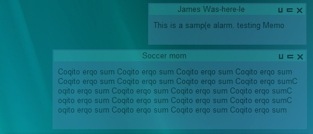
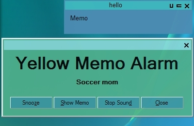
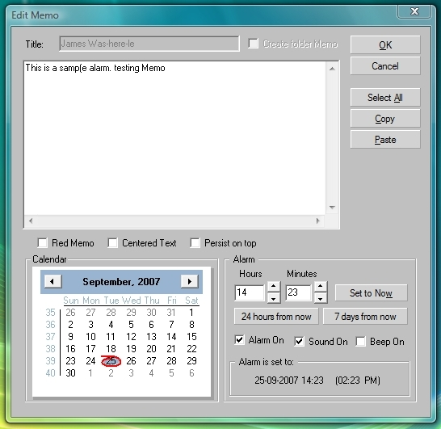

CryptoSticky Features
CryptoSticky
has special features, that makes it easy to use. CryptoSticky is auto
documenting, will guide you as you go along. There is an extensive set
of screen tips, which allows one to fully learn all the important
features of CryptoSticky without ever reading the documentation.
Just to list some more of the highlights below:
Multiple Memos
Single button activation
Hierarchical list of Memos
Modern User Interface
Cool looking Transparency
Auto Transparency when
inactive
Single menu click Memo creation
One button clipboard transfer
Network integration
|

|
|
Screenshot of the Main Panel:

|
Red Memo to
signify importance
Calendar
settable alarm
Gentle but persistent
alarm cycle
Window 'on top' feature
Speaker
and Beep for failsafe sound
Per Memo Alarm
Configurable alarm sounds
(wav files)
One button clipboard
memo copy/paste
Auto sizing memos
Trash system for easy
recovery
One button clipboard
memo copy/paste
Auto sizing memos
Autostart, Autohide,
Autoshow features
Windows remember their
positions
Auto transparency timeout
|
Screenshot of colored memos:
User
configurable Memo Colors
User settable Memo
Transparency levels
Easy activation of
individual Memos
Convenient system tray icon
Topmost setting for always visible
memos
Beep frequency and duration
settings
Easy Alarm Feature
|

|
Screenshot of the colored alarm
dialog:

|
User
configurable Alarm Colors
Missed alarm reports
Easy dismissal of individual
alarm instances
User settable Alarm Sounds
Show next alarm feature
Convenient system tray
icon screentips
Topmost alarm for always visible
alarm
Beep frequency and duration
settings |
Screenshot of the edit dialog with
calendar:
Easy calendar
selectable alarm
Convenient (one hand) hot keys
Set to now feature for alarm testing
Day and week setting in advance
Controls for alarm sound and beep
Red memo checkbox for important
alarms
Standard clipboard operations
Hot keys conforming to standards
Persistent 'on top' memo option
Set to now for easy alarm testing
Date ahead an week ahead buttons
Clear visual on actual alarm
date/time
Red memo option to signify
importance
Independent beep and speaker
controls
easy to read an navigate calendar
Alt equivalent of standard hot keys
|
 |
The
screenshots on this page were prepared on a Windows Vista
Tablet with Vista's default options and color schemes. We adjusted
CryptoSticky's memo colors and alarm colors to match the color scheme of
the windows background. Your screen might look different.
|
Copyright © by Peter
Glen
|